Scatterplots with R
Martin Schweinberger
2020-06-03

1 Introduction
This tutorial shows how to create scatter plots with R. The entire code for the tutorial can be downloaded here. This tutorial assumes that you have already gone through and exectuted the code shown in the “Introduction to data visualization with R” tutorial - if you have not, you can find that tutorial here.
Activating packages and loading the data
In a first step, we load the packages and inspect the data. The data set is stored as “lmmdata” but we change the name to “vizdata”. The data set contains 537 observations of 5 variables: Date, Genre, Text, Prepositions, and Region. Date refers to the date when the text was written (Date), the genre of the text (Genre), the name of the text (Text), the relative frequency of prepositions in the text (Prepositions), and the region in which the text was written (Region).
# activate packages
library(knitr)
library(lattice)
library(ggplot2)
library(dplyr)
# load data
vizdata <- read.delim("https://slcladal.github.io/data/lmmdata.txt", header = TRUE)
# inspect data
kable(head(vizdata), caption = "First 6 rows of the data")| Date | Genre | Text | Prepositions | Region |
|---|---|---|---|---|
| 1736 | Science | albin | 166.01 | North |
| 1711 | Education | anon | 139.86 | North |
| 1808 | PrivateLetter | austen | 130.78 | North |
| 1878 | Education | bain | 151.29 | North |
| 1743 | Education | barclay | 145.72 | North |
| 1908 | Education | benson | 120.77 | North |
We will now turn to creating the graphs.
2 Scatter Plots
The first, and simplest graph, is a so-called scatterplot. Scatterplots are used when the graph is set up to display the relationship between two numeric variables. We will start off with creating a scatter plot in base, then in lattice and finally in the ggplot environment.
2.1 Scatter Plots in base
The most fundamental function to create plots in the base environment is to use the general “plot” function. Here, we use that function to create a simple scatter plot.
# create simple scatter plot
plot(Prepositions ~ Date, # plot Prepositions by Date
type = "p", # plot type p (points)
data = vizdata, # define data
ylab = "Prepositions (Frequency)", # add y-axis label
xlab = "Date (year of composition)", # add x-axis label
main = "plot type 'p' (points)" # add title
) # end drawing plot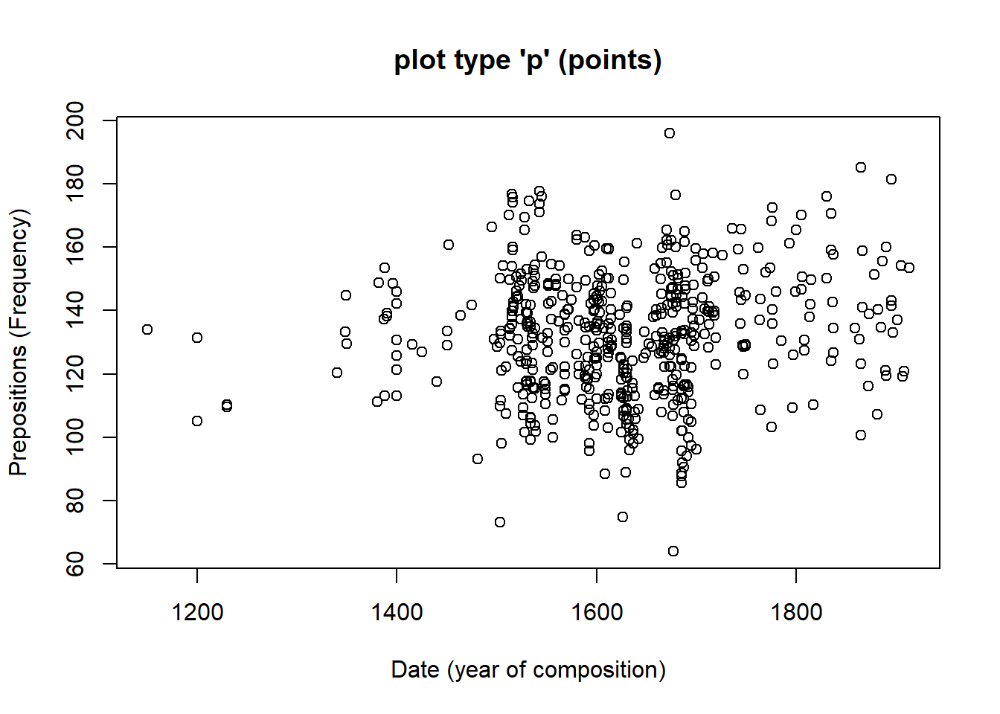
Let us go over the command. The first part of the call is “plot” which is the function for plotting data in the “base” package. In the round brackets are the arguments in which we specify what the plot should look like. The “Prepositions ~ Date” part tells R which variables should be displayed and the “type =”p"" part tells R which type of plot we want (“p” stands for points, “l”, for lines, “b” for both lines and points). The part “data = vizdata” tells R which data set to take the data from, and “ylab =”Prepositions (Frequency)"" and “xlab =”Date (year of composition)"" informs R about the axes’ labels. The part “main =”plot type ‘p’ (points)" informs R about what we want as the main title of the plot.
In a next step, we will change the title, add two regression lines to the scatterplot (in the first case a linear and in the second case a smoothed regression line) and we will change the points as well as the colour of the points.
# create simple scatter plot with ablines
plot(Prepositions ~ Date, # plot Prepositions by Date
type = "p", # plot type p (points)
data = vizdata, # define data
ylab = "Prepositions (Frequency)", # add y-axis label
xlab = "Date (year of composition)", # add x-axis label
main = "Scatterplot", # add title
pch = 20, # use point symbol 20 (filled circles)
col = "lightgrey" # define symbol colour as light grey
) # end drawing plot
abline( # add regression line (y~x)
lm(vizdata$Prepositions ~ vizdata$Date),# draw regression line
col="red" # define line colour as red
) # end drawing line
lines( # add line (x,y)
lowess(vizdata$Prepositions ~ vizdata$Date),# draw smoothed lowess line (x,y)
col="blue" # define line colour as blue
) # end drawing line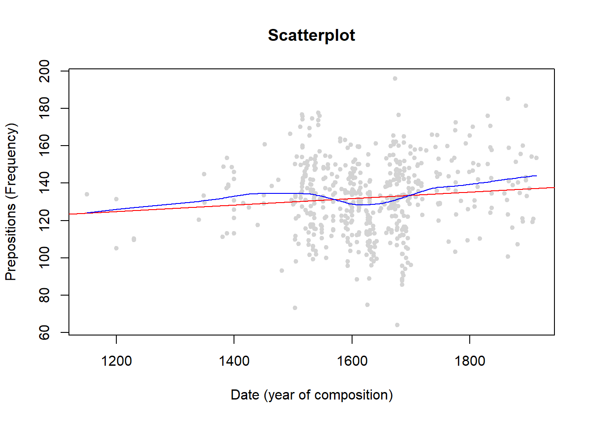
The only things that are different in the main call are the “pch” argument with has changed the points into filled dots (this is what the 20 stands for) and the “col” argument which we have specified as “lightgrey”. The regression lines are added using the “abline” and the “lines” argument.
Exercise Time!
Load the data set called “data03” and create a simple scatterplot showing the “Variable1” on the x-axis and “Variable2” on the y-axis.
Tipp: Use the code below to load the data.
# load data03
data03 <- read.delim("https://slcladal.github.io/data/data03.txt", sep = "\t", header = T)
# inspect data
kable(data03, caption = "Table showing data03")| Variable1 | Variable2 |
|---|---|
| 6 | 67 |
| 65 | 16 |
| 12 | 56 |
| 56 | 34 |
| 45 | 54 |
| 84 | 42 |
| 38 | 36 |
| 46 | 47 |
| 64 | 54 |
| 24 | 29 |
2.2 Scatter Plots in lattice
We now turn to data visualization in lattice. As the lattice package is already loaded, we can create a first simple scatter plot using the “xyplot” function form the “lattice” package. The scatter plot shows the relative frequency of prepositions by year of composition.
# create simple scatter plot
xyplot(Prepositions ~ Date,
# add y-axis label
ylab = "Prepositions (Frequency)",
# add x-axis label
xlab = "Date (year of composition)",
data = vizdata) 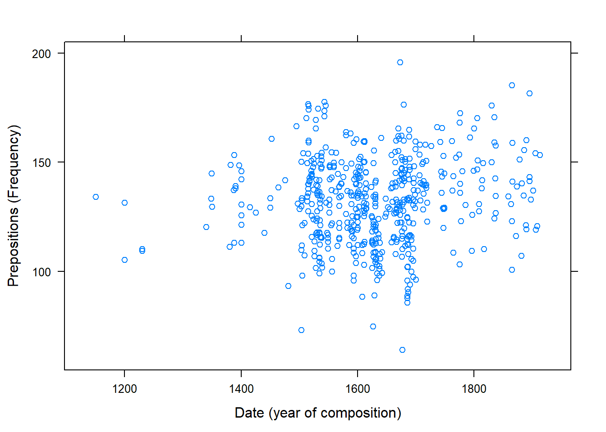
Since the “lattice” package was created to plot multiple relationships with a single call, we will now make use of that feature and plot multiple relationships at once. In addition, we will add a grid to the plot to improve comparability of data points within the graph. Thus, the scatter plot shows the relative frequency of prepositions by year of composition and genre.
# create scatter plots by species
xyplot(Prepositions ~ Date | Genre,
# add y-axis label
ylab = "Prepositions (Frequency)",
# add y-axis label
xlab = "Date (year of composition)",
# add grids to panels
grid = TRUE,
data = vizdata
) 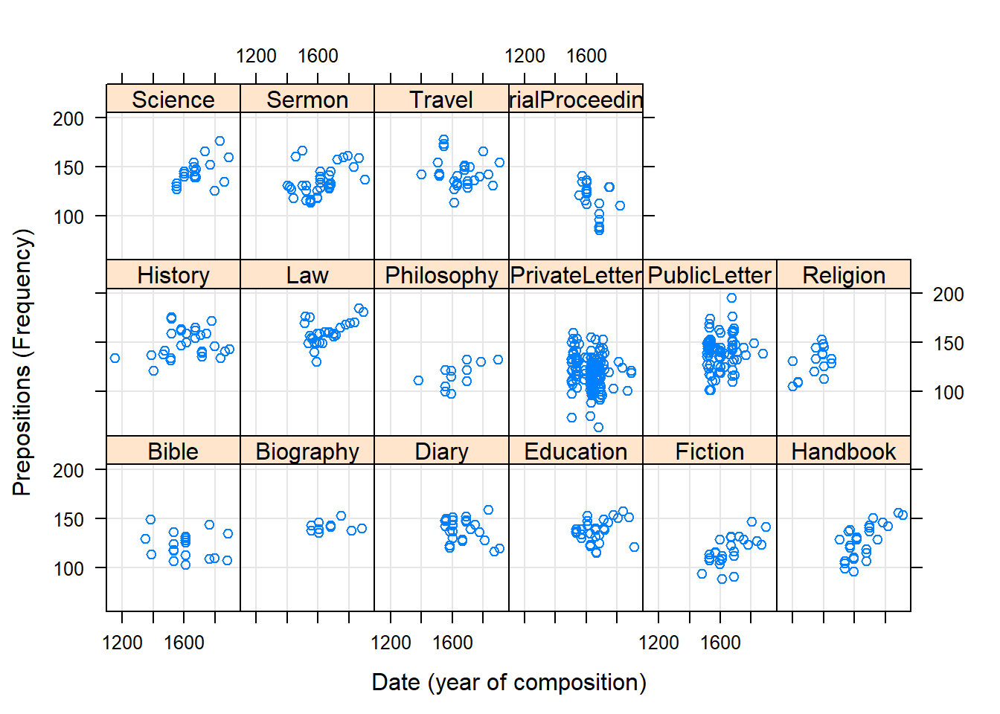
The only new code in the chunk above is the “| Genre” part. This part means that the relationship between Prepositions and Date should be displayed by Genre So, the |-symbol can be translated into “by”. The splitting of the plot into different panels for Genre is then done automatically.
Like in base, we can modify lattice-plots and specify, e.g. the symbols that are plotted or their colour.
# create scatter plots by species
xyplot(Prepositions ~ Date | Genre,
ylab = "Prepositions (Frequency)",
xlab = "Date (year of composition)",
grid = TRUE,
# symbol type (20 = filled dots)
pch = 20,
# color of symbols
col = "black",
data = vizdata
) 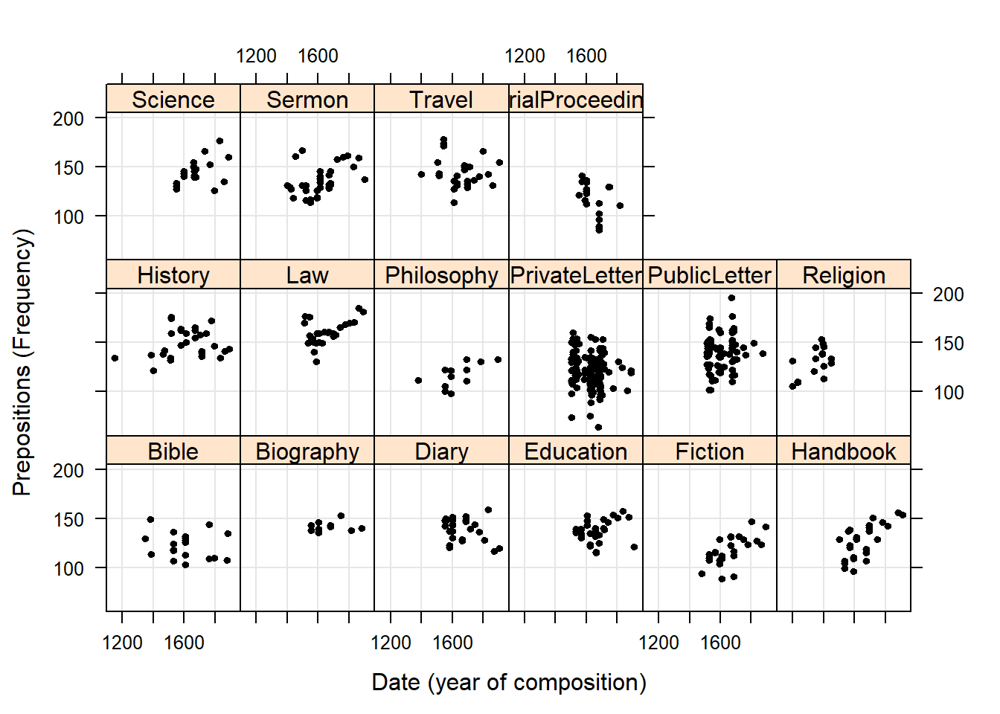
Next, we will use the “ggplot2”-package to create a scatter plot.
2.3 Scatter Plots in ggplot2
We now turn to data visualization using ggplot. As the ggplot2 package is already loaded, we create a very basic scatterplot in ggplot2 to show the advantages of creating visualizations in this environment.
# create simple scatter plot
ggplot(vizdata,
# define axes
aes(x= Date,
y= Prepositions)) +
# define plot type
geom_point() 
Let’s go over the code above. The function call for plotting in “ggplot2” is simply “ggplot”. This function takes the data set as its first argument and then requires aesthetics. The aesthetics are defined within the “ggplot” function as the arguments of “aes”. The “aes” function takes the axes as the arguments (in the current case). Then, we need to define the type of plot that we want. As we want a scatter plot with points, we add the “geom_point()” function without any arguments (as we do not want to specify the size, colour, and shape of the points just yet).
The advantage of “ggplot2” is that is really easy to modify the plot by adding new layers and to change the basic outlook by modifying the theme which is what we will do in the code below.
# create scatter plot colored by genre
ggplot(vizdata,
# define axes
aes(x=Date,
y= Prepositions,
# define to color by Species
color = Genre)) +
# define plot type
geom_point() +
# define theme as black and white (bw)
theme_bw() 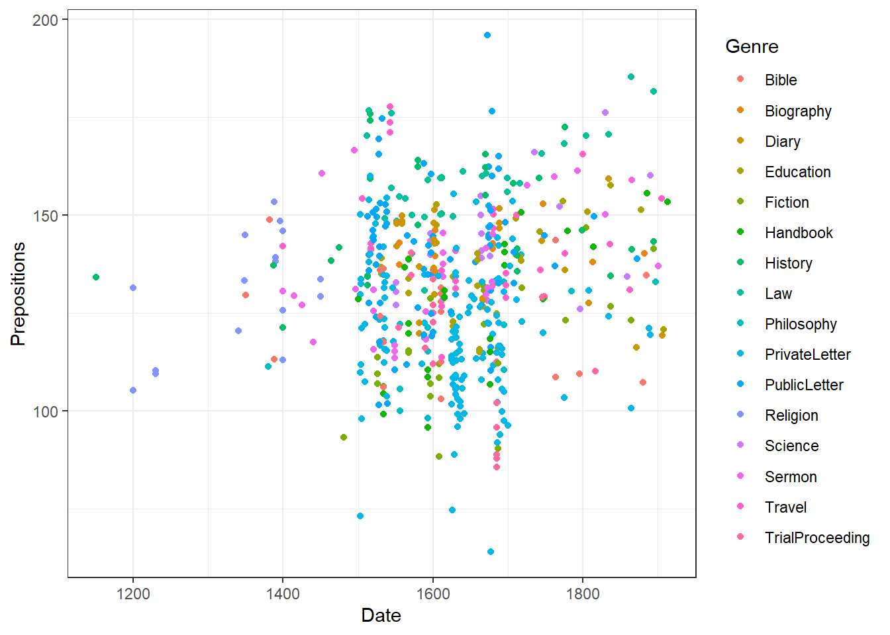
The example above is intended to show that creating ggplots is can be very simple but “ggplot2” is extremely flexible and thus allows us to modify the plot in various ways. To exemplify how a ggplot may be modified, we will change the colour of the dots, add a white rather than a grey background.
# create scatter plot colored by genre
ggplot(vizdata, aes(x=Date, y= Prepositions, color = Genre)) +
geom_point() +
theme_bw() +
scale_color_manual( # define colours to be used
values = c("indianred4", "darkblue", "orange", "lightgreen", "darkgreen",
"darkgrey", "grey50", "gray80", "brown", "red",
"goldenrod", "chartreuse", "black", "lightblue",
"blueviolet", "burlywood"))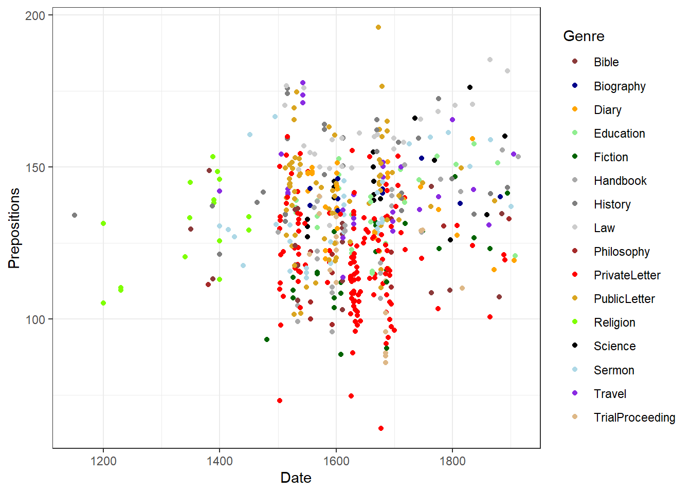
The white background is created by specifying the theme as a black and white theme (“theme_bw()”) while the colour of the dots is changed by specifying that the colour should be applied by Species (“color = Species”). Then, the colours to be used are defined in the function “scale_color_manual”.
2.4 Using symbols in scatter plots
Instead of using simple dots to represent data points, it can be useful to use symbols instead to make it easier for readers to understand what individual dots refer to. This is so because the reader does not have to take the eyes away from the graph to the legend to understand what a dot represents.
As the data is too rich for such a visualization, we will create a reduced data set so that the graph is more readily interpretable.
# modify data
vizdataredux <- vizdata %>%
dplyr::filter(Genre == "Bible" | Genre == "Fiction" | Genre == "PrivateLetter" | Genre == "Science" | Genre == "History" | Genre == "Sermon") %>%
dplyr::mutate(Date =as.numeric(Date)) %>%
droplevels() %>%
dplyr::select(-Text)
# inspect data
library(knitr)
kable(head(vizdataredux), caption = "First 6 rows of reduced data")| Date | Genre | Prepositions | Region |
|---|---|---|---|
| 1736 | Science | 166.01 | North |
| 1808 | PrivateLetter | 130.78 | North |
| 1762 | Sermon | 159.71 | North |
| 1726 | Sermon | 157.49 | North |
| 1835 | PrivateLetter | 124.16 | North |
| 1837 | History | 134.48 | North |
We can now specify the symbols in the scatterplot.
# create scatter plot colored by genre
ggplot(vizdataredux, aes(Date, Prepositions, group = Genre, color = Genre)) +
geom_point(aes(y = Prepositions, shape = Genre)) +
guides(shape=guide_legend(override.aes=list(fill=NA))) +
scale_shape_manual(name = "Genre", values = c("B", "F", "H","L","S","R")) +
theme_bw() +
theme(legend.position="top")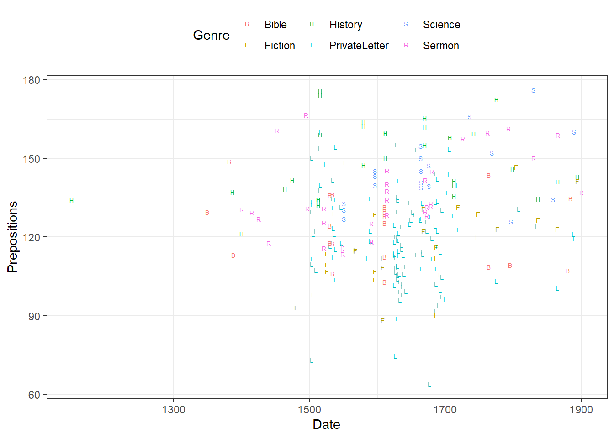
2.5 Dot plots with error bars
In addition, we can add regression lines with error bars by Species and, if we want to show separate windows for the plots, we can use the “facet_grid” or “facet_wrap” function and define by which variable we want to create different panels.
# create scatter plot colored by genre in different panels
ggplot(vizdata, aes(Date, Prepositions, color = Genre)) +
facet_wrap(vizdata$Genre, ncol = 4) +
geom_point() +
geom_smooth(method = "lm", se = F) +
theme_bw() +
theme(legend.title = element_blank(),
axis.text.x = element_text(size=8, angle=90))
If we only want to show the lines, we simply drop the “geom_point” function.
# create scatter plot colored by genre in different panels
ggplot(vizdata, aes(x=Date, y= Prepositions, color = Genre)) +
facet_wrap(vizdata$Genre, ncol = 4) +
geom_smooth(method = "lm", se = F) +
theme_bw() +
theme(legend.title = element_blank(),
axis.text.x = element_text(size=8, angle=90))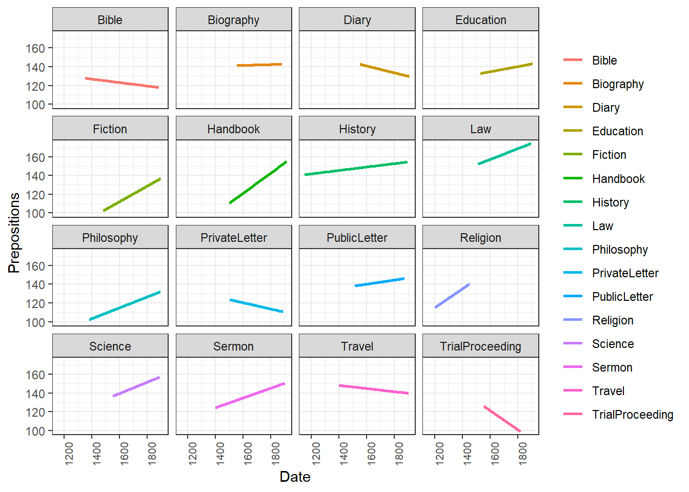
Another option is to plot density layers instead of plotting the data points.
# create scatter density plot
ggplot(vizdata, aes(x=Date, y= Prepositions, color = Genre)) +
facet_wrap(vizdata$Genre, ncol = 4) +
theme_bw() +
geom_density_2d() +
theme(legend.title = element_blank(),
axis.text.x = element_text(size=8, angle=90))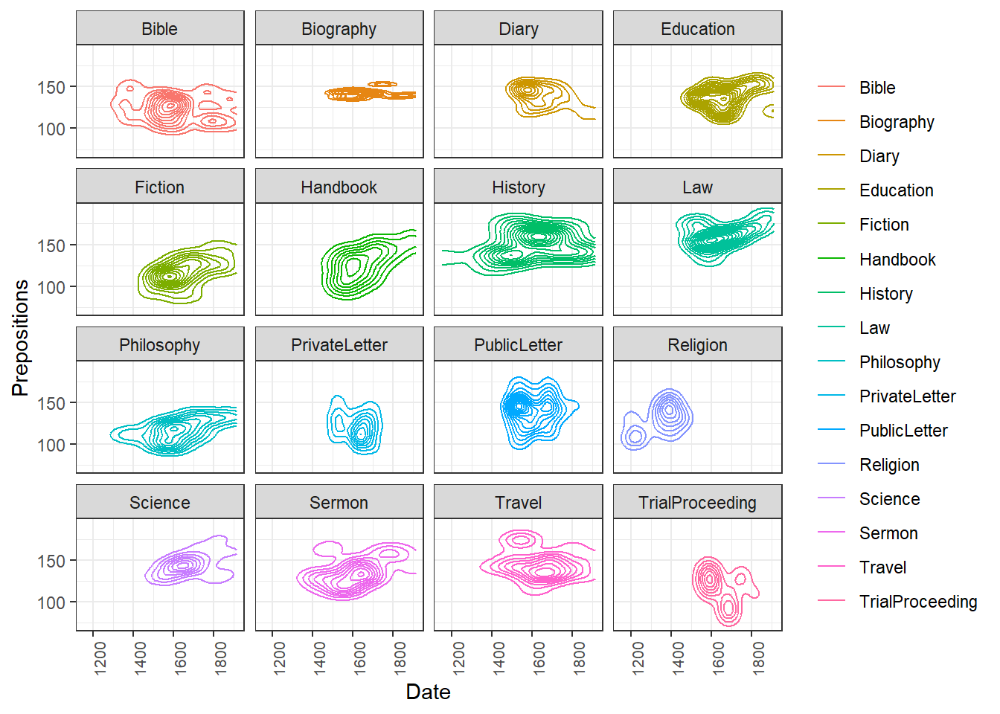
Although these are not scatterplots, plots with dot-symbols are very flexible and can be extended to show properties of the distribution of values. One way to create such a plot is to plot means as dot-symbols and add error bars to provide information about the underlying distribution. The plot below illustrates such a plot and additionally shows how plots can be further customized.
# scatter plot with error bars
ggplot(vizdata, aes(x=reorder(Genre, Prepositions, mean), y= Prepositions, group = Genre)) +
# add title
ggtitle("Prepositions by Genre") +
# create a dot at means
stat_summary(fun.y = mean, geom = "point",
# means by Species
aes(group= Genre)) +
# bootstrap data
stat_summary(fun.data = mean_cl_boot,
# add error bars
geom = "errorbar", width = 0.2) +
# def. y-axis range
coord_cartesian(ylim = c(100, 200)) +
# def. font size
theme_bw(base_size = 15) +
# def. x- and y-axis
theme(axis.text.x = element_text(size=10, angle = 90),
axis.text.y = element_text(size=10, face="plain")) +
# def. axes labels
labs(x = "Genre", y = "Prepositions (Frequency)") +
# def. to col.
scale_color_manual(guide = FALSE) 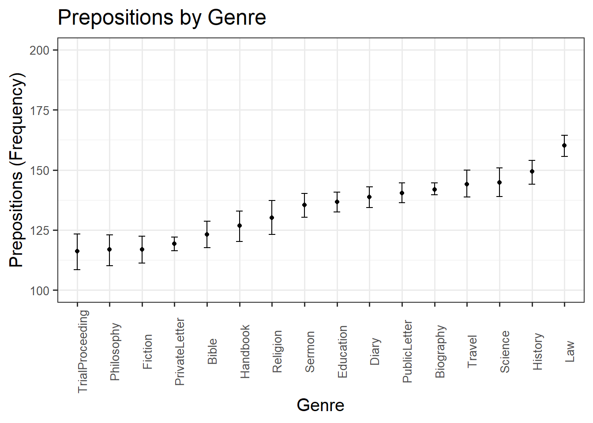
In the following, we will simply go over the most common types of graphs and use examples to show what they look like and how they can be created. The main graph types we will have a look at are:
- line graphs (“geom_line” and “geom_smooth”)
- bar plots (“geom_bar”)
- boxplots (“geom_box” and “geom_violin”)
- density plots (“geom_density”)
In order to be able to use these visualizations, we will modify the data to better bring the point across.
# modify data
lineplotdata <- vizdataredux %>%
dplyr::mutate(Date = ifelse(Date < 1600, "1600",
ifelse(Date < 1700, "1700",
ifelse(Date < 1800, "1800",
ifelse(Date < 1900, "1900", "1900"))))) %>%
group_by(Date, Genre) %>%
dplyr::summarise(Mean = mean(Prepositions)) %>%
dplyr::ungroup() %>%
dplyr::mutate(Date =as.numeric(Date))
# inspect data
str(lineplotdata)Classes ‘tbl_df’, ‘tbl’ and ‘data.frame’: 24 obs. of 3 variables: $ Date : num 1600 1600 1600 1600 1600 1600 1700 1700 1700 1700 … $ Genre: Factor w/ 6 levels “Bible”,“Fiction”,..: 1 2 3 4 5 6 1 2 3 4 … $ Mean : num 125 111 147 126 136 …
We are now in a position to start creating line graphs with ggplot.
How to cite this tutorial
Schweinberger, Martin. 2020. Visualizing data using R. Brisbane: The University of Queensland. url: https://slcladal.github.io/basicgraphs.html.